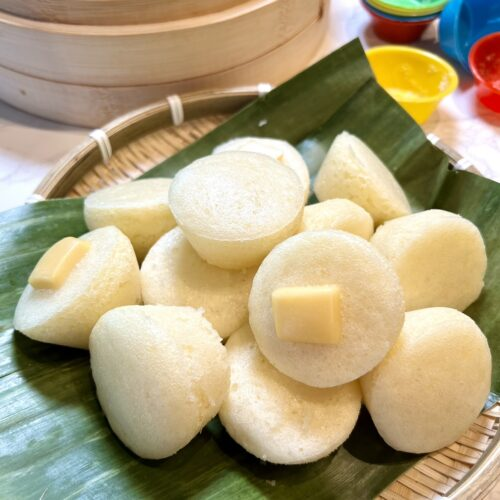

Harry Puto!
"Feast Like a Wizard, Where Every Bite is Pure Magic"
One of the best tasting puto locally! A good tasting puto enhanced with magical flavors that'll surely amaze you

Ingredients
- 1 cup of all purpose flour
- 1/2 cup of granualated white sugar
- 1 1/2 teaspoons of baking powder
- 3/4 cup fresh milk
- 1 cup of all purpose flour
- 1/4 teaspoon of vanilla extract
- 3/4 cups of sharp cheddar cheese
- 1 egg
- 2 tablespoons of butter (melted)
- 5 cups of water (for steaming)
Equipment
- Measuring cups (2 sets for wet and dry ingredients)
- Spoons (4)
- Whisk
- Bowl (3)
- Steamer
- Lampin or "Thin Cloth"
- Molds
- Butter Brush
Steps
- Prepare the dry ingredients: Sift together flour, sugar, and baking powder in a bowl.
- Mix the wet ingredients: Combine water, coconut milk, egg, and melted butter in another bowl.
- Combine wet and dry ingredients: Make a well in the dry ingredients and pour in the wet ingredients. Mix until smooth and well-blended.
- Rest the batter: Cover and refrigerate the batter overnight or for at least 30 minutes.
- Prepare the steamer: Bring water to a boil in a steamer. Grease puto molds with non-stick cooking spray or melted butter.
- Fill the molds: Pour the batter into molds until 3/4 full.
- Steam the puto: Steam for 10-15 minutes or until a toothpick inserted comes out clean.
- Add cheese (optional): Place a slice of cheese on top of each puto and steam for another 1-2 minutes.
- Serve: Remove from steamer and let cool slightly. Serve warm.